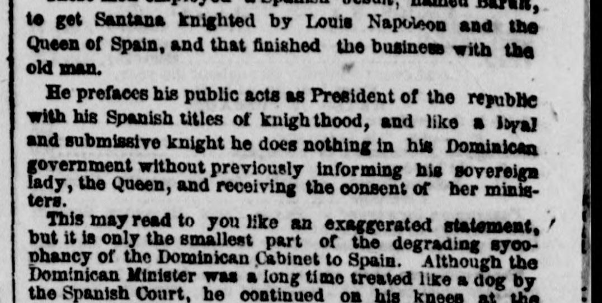
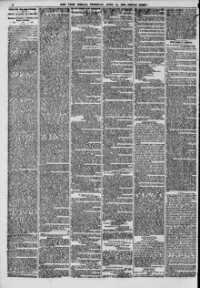

See the full pageVer la página completaAnd submissive knight he does nothing In his Pomlatcaa Gremanent withoutY caballero sumiso, no hace nada en su Gobierno dominicano sin
The New York Herald reported that members of the Dominican cabinet were actively petitioning the Queen of Spain to re-annex the Dominican Republic as a Spanish colony. The correspondent stated that ordinary Dominicans strongly opposed submission to either Spain or Haiti, but a small, corrupt ruling elite sought European titles and foreign protection. Spain reportedly hesitated to accept the colony due to French diplomatic pressure favoring Haitian interests.The New York Herald informó que miembros del gabinete dominicano solicitaban activamente a la reina de España la reanexión de la República Dominicana como colonia española. El corresponsal afirmó que los dominicanos de a pie se oponían firmemente a someterse tanto a España como a Haití, pero que una reducida y corrupta élite gobernante buscaba títulos nobiliarios europeos y protección extranjera. Según el despacho, España dudaba en aceptar la colonia debido a la presión diplomática francesa que favorecía los intereses haitianos.
FULL TEXT:TRADUCCIÓN:
to get Santana knighted by Louis Napoleon and the Queen of Spain, and that finished the business with the old man.conseguir que Santana fuera nombrado caballero por Luis Napoleón y la Reina de España, y eso terminó el negocio con el anciano.
He prefaces his public acts as President of the republic with his Spanish titles of knighthood, and like a loyal and submissive knight he does nothing in his Dominican government without previously informing his sovereign lady, the Queen, and receiving the consent of her ministers.Prefija sus actos públicos como Presidente de la república con sus títulos españoles de caballería, y como un caballero leal y sumiso no hace nada en su gobierno dominicano sin previamente informar a su señora soberana, la Reina, y recibir el consentimiento de sus ministros.
This may read to you like an exaggerated statement, but it is only the smallest part of the degrading sycophancy of the Dominican Cabinet to Spain. Although the Dominican Minister was a long time treated like a dog by the Spanish Court, he continued on his knees at theEsto puede leerles como una declaración exagerada, pero es solo la parte más pequeña de la adulación degradante del Gabinete Dominicano a España. Aunque el Ministro Dominicano fue por largo tiempo tratado como un perro por la Corte Española, continuó de rodillas ante la
The New York Herald. New York, April 12, 1860. Page 2.